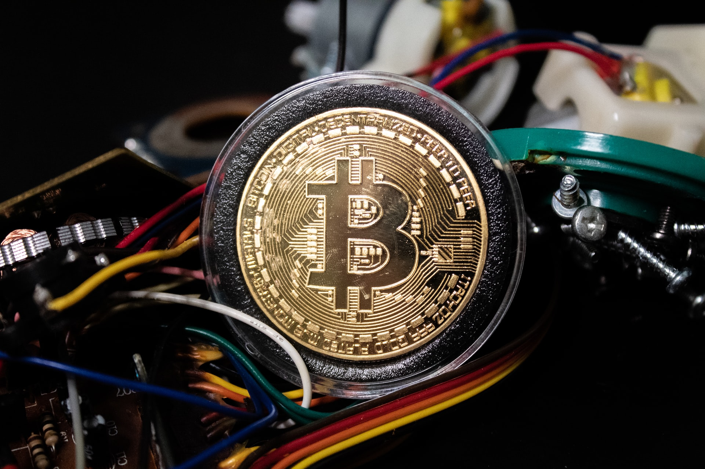
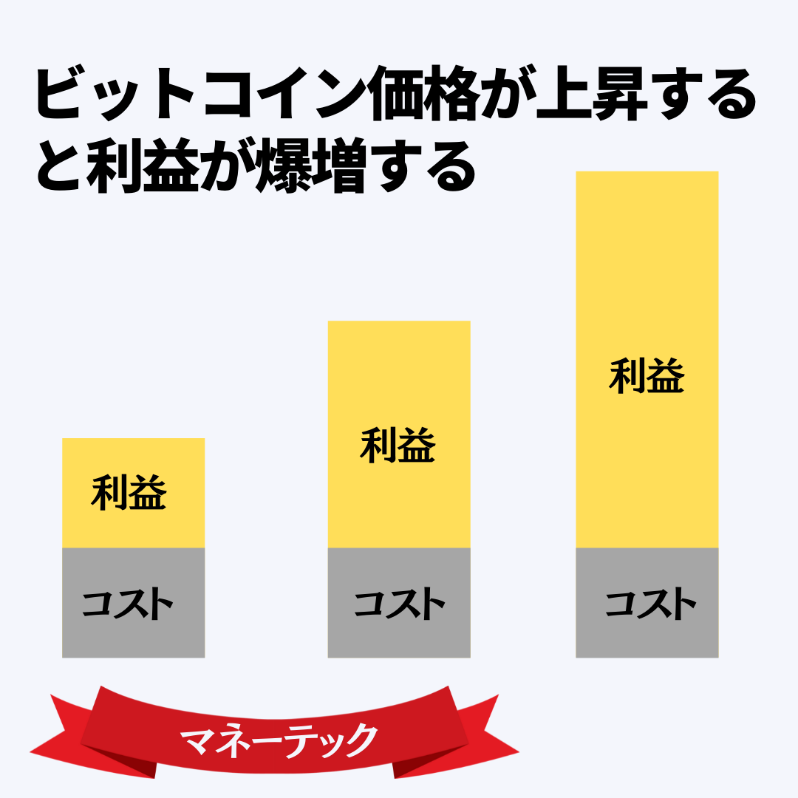
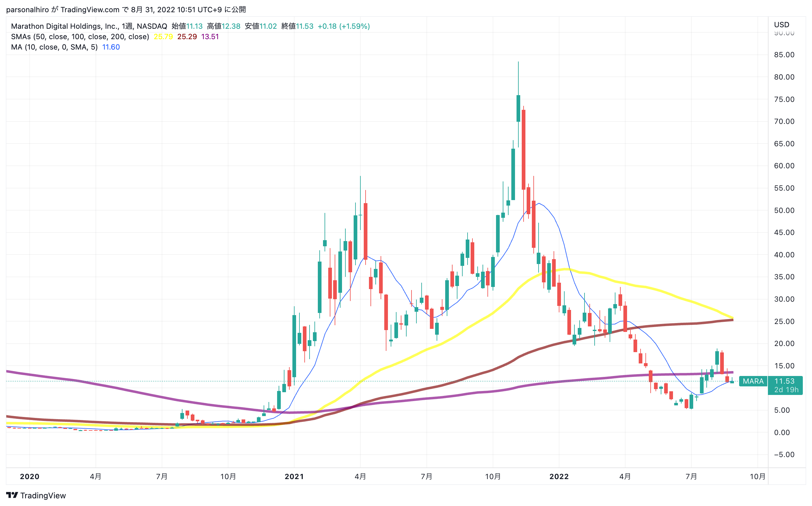
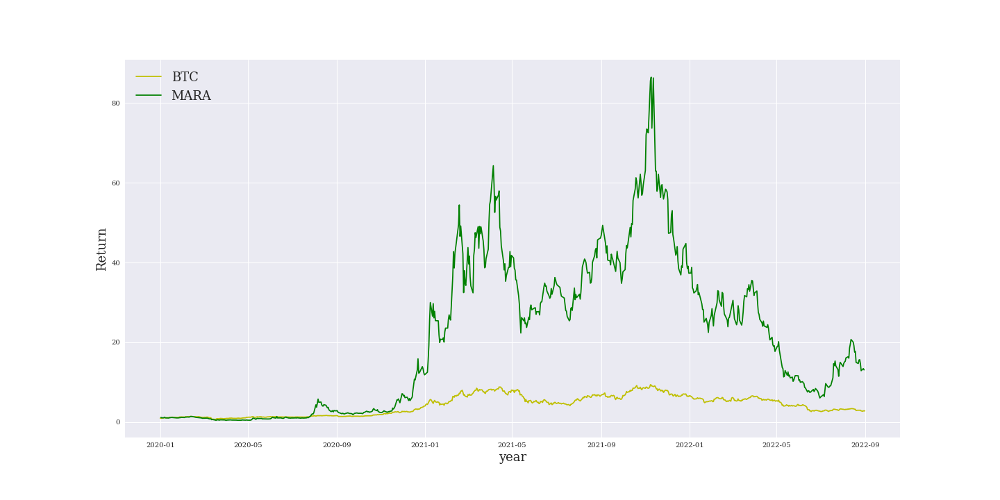
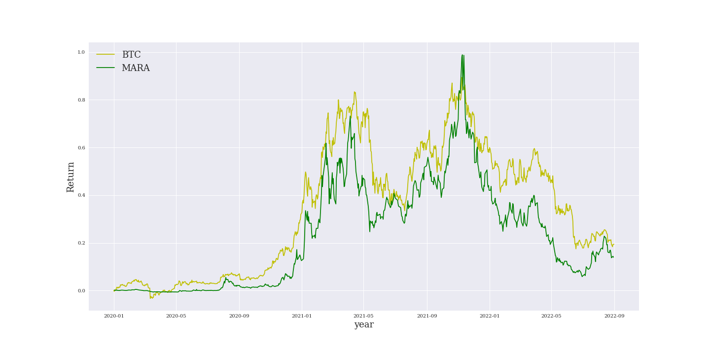

マイニング株MARAへの投資は儲かるの？
2022-08-31 by 内田裕之
- 「ビットコインのマイニング株への投資は儲かるの？」
- 「どのマイニング株が儲かるの？」
この記事はそんな方へ向けて書いています。
こんにちは。
株式投資で一攫千金を狙ううっちゃんです。
マイニング株はビットコインと相関が高く、さらに値動きが数十倍も大きいことはご存知でしょうか？
実はオペレーティングレバレッジが効くので非常に大きなリターンが期待できるのです。
この記事では私が投資ししてるマイニング株MARAを紹介します。
資産形成に役立つと嬉しいです。
ビットコインマイニングとは？
まず『仮想通貨のマイニング』について解説します。
マイニングとは仮想通貨の取引承認をする作業です。
PCの計算能力で競争して、一番早く処理できた人にマイニング報酬が与えられます。
ランニングコストは電気代と通信費、土地代、人件費、借入金の返済費です。
マイニング報酬がこれらのコストを上回れば利益になります。
マイニング株の魅力
マイニング株の魅力はオペレーティングレバレッジが効くことです。
オペレーティングレバレッジはランニングコストはほぼ変わらずに売上高が大きくなることで、利益が何倍にも膨らみます。
マイニングはビットコイン価格によって売上が大きく変化します。
しかし、電気代などのランニングコストはビットコイン価格に影響されません。
したがってビットコイン価格が今後大きくなれば、マイニング株は何十倍にもなることが期待されています。
保有しているマイニング株
取引しやすいマイニング株として米国企業が有名です。
私は以下の株式を保有しています。
マイニング株MARAは儲かるの？

今回は私が最も注目しているMARAについて紹介します。
MARAとは
MARAは、NASDAQに上場している米国マイニング企業です。
米国モンタナ州ハーディンで約105メガワットの電力容量を持つデータセンターを運営しています。
また、米国ノースダコタ州の共同ホスト施設に約2060の特定用途向け集積回路（ASIC）ビットコインマイナーを所有しています。
財務分析
2022年6月30日時点での四半期業績は、売上高が前年同期比15%下がって2,492万ドルになりました。
営業利益は-17,821万ドルの赤字、純損益も-19,165万ドルの赤字でした。
AISCの導入を進めて売上は伸びていますが、利益が出ていないのが現状です。
特に、2022年はビットコイン価格も低迷したので業績に大きく影響しました。
株価のトレンド
2021年から一時80倍まで急上昇した銘柄です。
いまは12ドル付近まで急落しています。
200週移動平均線を割り込んでしまったので、しばらくは低迷すると考えています。
一方で、ビットコインとの相関を調べます。
2020年1月1日の価格を1として両者のリターンを比較します。
緑色がMARA、黄色がBTCです。
MARAの値動きが大きすぎて相関が分かりづらいですね。
そこでリターンの最大値で割ることで上下の変動幅を揃えます。
色は先程と同様です。
かなり相関が高いことがわかると思います。
つまりビットコイン価格があがればMARAの株価上昇も期待できるでしょう。
いま割安なうちに仕込むのもありだと思います。
まとめ
今回は私が投資しているマイニング株MARAについて紹介しました。
- ビットコインよりも大きなリターンが期待できる。
- しかも、値動きはビットコインと大きく関係している。
この記事が面白いと思ったらTwitterやブログで紹介していただけますと嬉しいです。